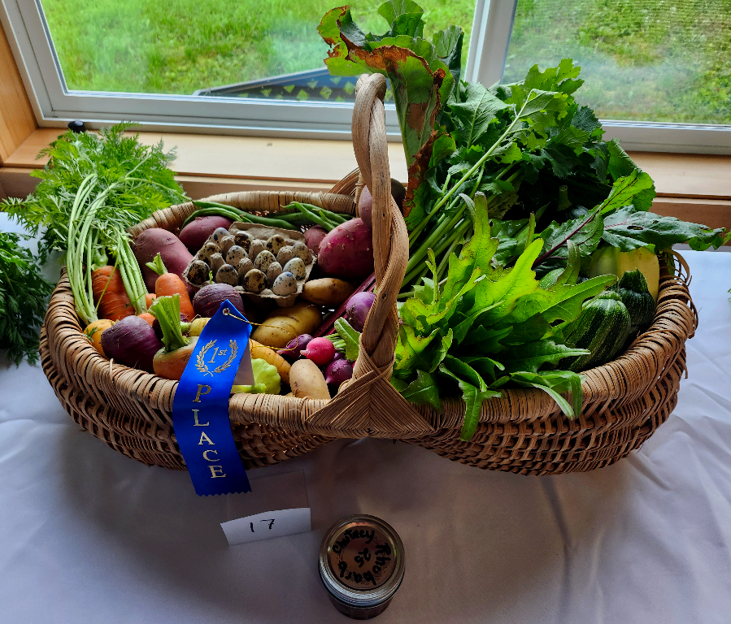
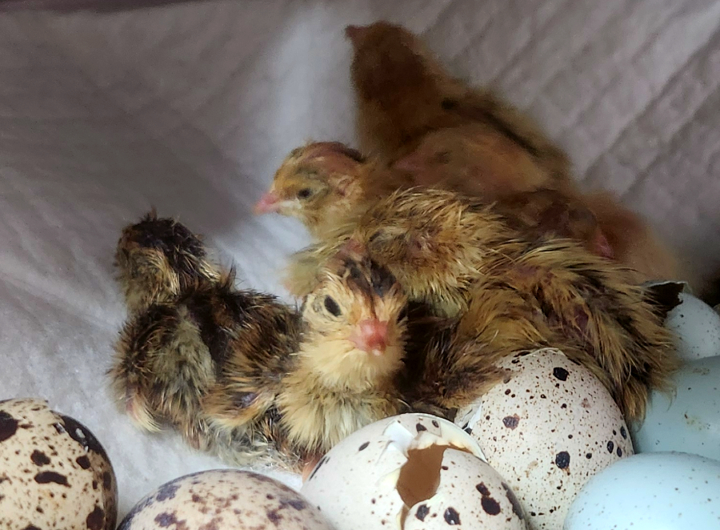

🌱 Plant Starts Available Now! 🌱
🍓 Garden Strawberry Plants 🍓
🌸 Two domestic varieties available:
🍓 June-bearing • 🍓 Everbearing
Respectable harvest from parent plants last year — strong, proven performers for Gustavus gardens!
Announcing
Cultivating Food Sovereignty for Gustavus
2026 Workshop Series


Meat Rabbit Husbandry & Cage Building FREE
📅 June 20, 2026 · 1:30–4:30 PM · Gustavus Library Conference RoomJoin us for a hands-on workshop! We'll have two litters of nine-week-old babies plus nest box babies to demonstrate proper handling and growth stages. Learn how to construct a large grow-out cage for fryers, perform a basic health check on rabbits, and identify good commercial body type.
Open to all skill levels — ARBA member with 20 years experience leading the session.

Carrot Tasting FREE
📅 September 14, 2026 · 5:30–8:00 PM · Gustavus Community CenterThe carrots were planted May 7. There are 18 varieties this year!
Varieties: Bolero, Candy, Orange Fancy, Napoli, Mokum, Romance, Shin Kuroda, Sugarsnax 54, Rubypak, Deep Purple, Purple Elite, Dragon, Gold Nugget, Rainbow (donated by Rural CAP Foundation from Johnny's Selected Seeds), Atomic Red and Cosmic Purple (donated by an online follower), St. Valery and Little Fingers (leftover from last year, used as controls).
📱 Will update photos as they grow, so check back!
2025 Results - 17 Varieties
602024 Results - 6 Varieties
88
Rabbit & Poultry Show FREE
📅 September 19, 2026 · Time TBA · Gustavus Harvest FestivalEducational judged show with ribbons and family-friendly activities. Featuring rabbits, poultry, and community celebration of local livestock. Part of the free annual Gustavus Harvest Festival.
📍 Location: Gustavus Community Center — the show will be held in the grassy area behind the center if weather cooperates.
🐇🐓 Register at the library by September 18 to enter your rabbits or poultry — we'll arrange the tent for the critters.
Community Support: This workshop series receives financial support from the RurAL CAP Foundation. All workshops are free and open to the public!

Second Saturday Market
Check us out May 9
We will have fresh chives that will sell out fast!
Saturday, noon–2:30pm at the Gustavus Community Center.
Fresh seasonal produce, quail eggs, and homestead goods from our Gustavus garden.

Fresh Quail Eggs
Fertile eggs - perfect for eating or hatching. Some eggs have rare celadon genetics for possible blue egg layers!
Available in Gustavus: Eggs available starting June 2026
June Availability
Quail Chicks & Adults
We have about 30 Coturnix Quail.
Assorted Coturnix feathers — many colors. Perfect for salmon and Dolly Varden flies.
$3 per card (15+ feathers)